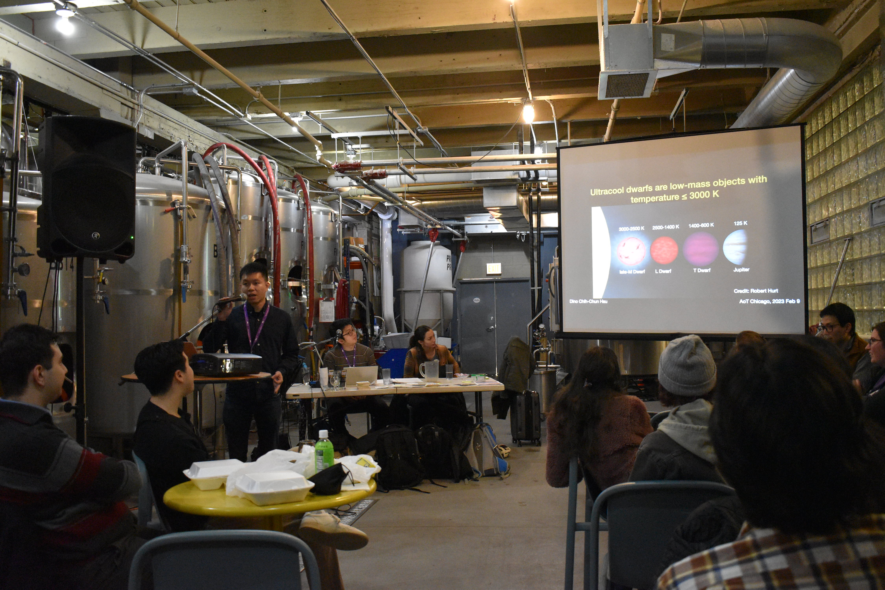

Teaching & Outreach
 Astronomy on Tap Chicago on February 9, 2023; Credit: Madeline WilsonI had extensive teaching and outreach experience since my graduate studies. During my Ph.D. at UC San Diego, I taught various classes with a total of 15 quarters of teaching experience, including the
- Undergraudate stellar astrophysics (PHYS5, PHYS 160),
- Undergraduate stellar classical mechanics (PHYS 1A),
- Undergraduate physics lab in classical mechanics (PHYS 2BL), and
- Undergraduate physics lecture/lab in modern physics (PHYS 2D/2DL).
From 2021 to 2022, I mentored three undergraduate students to curate a sample of ultracool dwarf wide binaries using Gaia eDR3 curated by El-Badry. The result has been submitted to AAS Research Notes.
In 2019, I was awarded the Carol and George Lattimer Award for Graduate Excellence, for graduate students in the Divisions of Physical Sciences who seek interdisciplinary approaches to problem-solving and have a strong commitment to education, mentorship, and service.
I also participated in various outreach activities, including the
- 2019 Institute for Scientist & Engineer Educations (ISEE) Professional Development Program (PDP) that provided a one-day Python workshop for transferred students from community college to UCLA,
- 2017 IOA Science Innovation Camp Physics Outreach designed for Latin American high-school students,
- 2019 The Barrio Logan Science & Art Expo aimed at promoting physical education and outreach toward Mexican families, and
- Three consecutive years (2019-2021) of Python Workshop for Physics Undergraduate Students to help bridge the programming skills for transferred students from community college to UCSD.